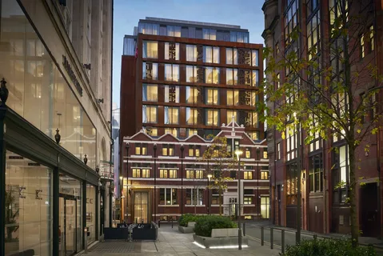

|
Отель Corinthia London расположен в нескольких шагах от Трафальгарской площади и Уайтхолла. В отеле к услугам гостей рестораны, бары, цветочный магазин и лондонский спа-салон.В оформлении просторных номеров с кондиционером сочетаются элементы декора отеля 1885 года и современные удобства. Из окон каждого номера открывается вид на город. К услугам гостей док-станция для iPod, ЖК-телевизор, бесплатный Wi-Fi и красивая ванная комната, облицованная мрамором.Гости могут заказать спа-процедуры и оздоровительные процедуры в спа-центре ESPA Life at Corinthia. Кроме того, на территории отеля работает парикмахерская.В четырехэтажном спа-центре к услугам гостей 17 процедурных кабинетов, частный спа-кабинет и этаж Thermal с крытым бассейном, оздоровительным бассейном, сауной-амфитеатром, ледяным фонтаном, мраморными шезлонгами с подогревом и отдельными спальными капсулами.Известный шеф-повар Том Керридж, удостоенный звезды Мишлен, открыл в отеле свой первый лондонский ресторан с классическим меню. |
|
Отель ibis London City - Shoreditch находится всего в 20 метрах от станции метро Aldgate East в Лондоне. К услугам гостей современные номера с кондиционером. До станции Liverpool Street можно дойти за 10 минут.Отель ibis London City - Shoreditch расположен в центре Лондонского Сити, в 15 минутах ходьбы от собора Святого Павла. До оживленного района Саут-Банк с современной галереей Тейт и Шекспировским театром «Глобус» можно дойти за 20 минут.Яркие номера отеля Ibis London City - Shoreditch располагают собственной ванной комнатой, принадлежностями для чая/кофе, интерактивным телевизором с плоским экраном и спутниковыми каналами. Wi-Fi работает на всей территории отеля.В стильном ресторане Fogg гостям предложат блюда со всего мира и карту вин из разных стран. В уютном баре отеля можно заказать легкие закуски и континентальный завтрак, а горячие закуски подают круглосуточно. |
| 
Отель Edwardian Manchester, A Radisson Collection, удостоенный награды в номинации «Ведущий отель 2019 года», расположен в здании Зала свободной торговли, рядом с Центральным конференц-центром Манчестера. К услугам гостей оздоровительный спа-центр, ресторан и бар. На всей территории отеля действует бесплатный Wi-Fi.Гостям предлагаются номера с видом на город, пуховыми подушками и отделанной итальянским мрамором ванной комнатой. Кроме того, они оснащены телевизором с плоским экраном и письменным столом. Некоторые номера выходят на террасу.В ресторане Peter Street Kitchen, удостоенном звания «Лучший ресторан класс люкс 2019 года», подают блюда современной японской и мексиканской кухни.Гости могут заказать расслабляющие процедуры в спа-центре Spa & Gym. Сотрудники круглосуточной стойки регистрации, владеющие английским, испанским, итальянским и португальским языками, готовы в любое время оказать гостям необходимую помощь. |